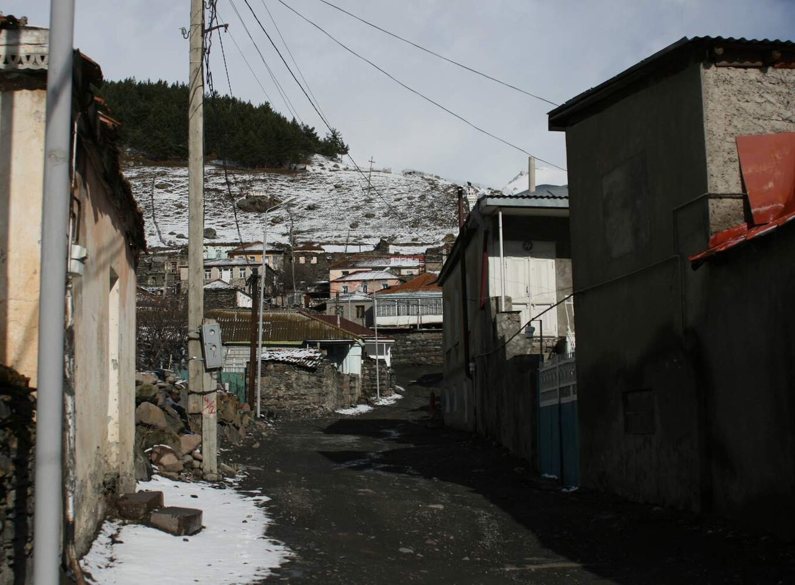
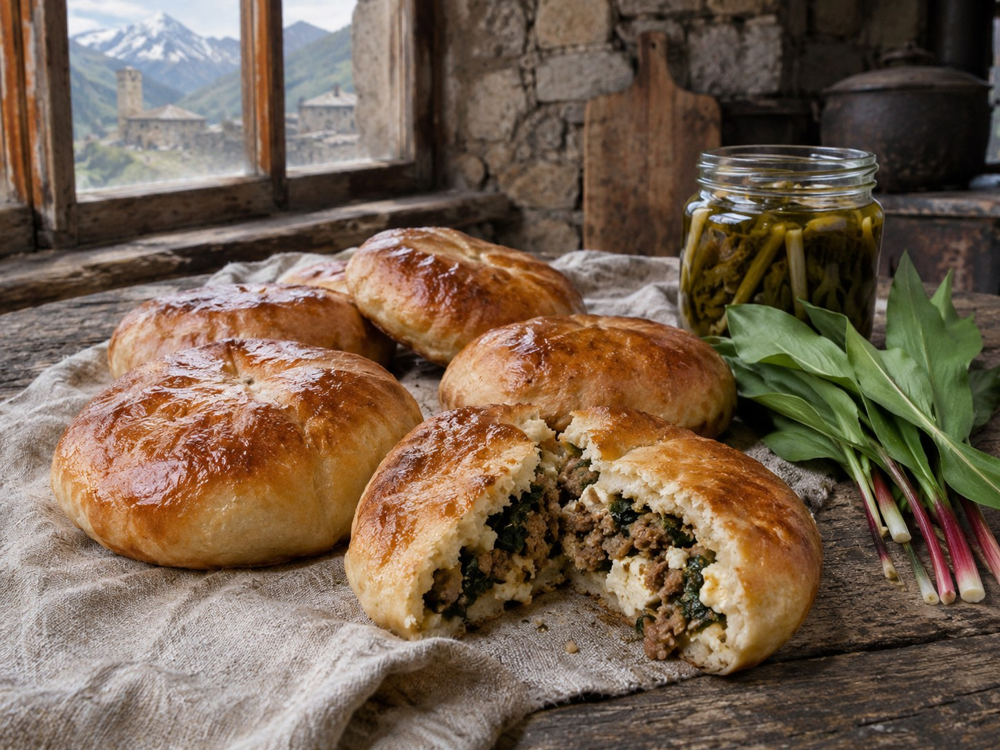

Велосипед

Не садитесь на тот стул, он для кастрюли. Садитесь сюда, к окну, отсюда видно Казбек, если он сегодня захочет показаться. Сегодня не захочет, у него с утра облако на голове. А башо пусть варится. Ему сорок минут, не меньше, пока стебель не начнёт мяться в руке, как тряпочка. Я его сегодня рвала с внуком наверху, где только отходит снег. Башо — это наш горный лук. В книжках его называют шебу, у тушин он шебуи, у хевсуров шибу, а у нас, в Хеви, башо. Он вылезает первым, раньше травы, иногда прямо через снег. Его мало, он теперь в Красной книге, так что мы рвём немного, сколько рвали бабушки. Бабушки, правда, про Красную книгу не знали. Они просто знали, что если вырвать всё, на тот год ничего не будет.
Я буду говорить по-русски, вы уж простите, какой есть. Мой русский с базара, с владикавказского. Отсюда до Владикавказа ближе, чем до Тбилиси: в Тбилиси надо через перевал, а во Владикавказ просто вниз, вдоль Терека, пара часов. При советской власти, когда он ещё назывался Орджоникидзе, наши ездили туда за обувью, за мебелью, к врачу, учиться. Мама возила туда сыр и масло и брала меня с собой. Там я и выучила. Другого русского у меня нет. У вас слова из книжек, а у меня с прилавка. Вы записывайте своими, только базар совсем не выбрасывайте, а то это буду уже не я.
Прабабушка у меня говорила, что по нашей дороге гости приходят снизу, а сверху приходят без спросу. Это она про двадцать первый год, когда красные спустились к нам через Дарьял. Больше она про это ничего не рассказывала, только эту фразу, и я в детстве думала, что это загадка.
Хевцы вообще народ упрямый. В восемьдесят восьмом году власти протянули канатную дорогу к нашей церкви на горе, к Цминда Самеба, и поставили станцию прямо возле неё. Чтобы туристы поднимались, как в Тбилиси на Мтацминду. Наши посмотрели на эту станцию у святого места и разобрали её. Не за одну ночь, но разобрали. Мой отец потом всю жизнь говорил, что ничего про это не знает, а у нас в сарае до сих пор лежит железный ролик, которому в хозяйстве нет никакого применения. Я его не выбрасываю, иногда подпираю им дверь.
Вы спрашиваете про велосипед. Он там же, в сарае, рядом с роликом. На нём сегодня внук ездил за башо, до того места, где кончается дорога, а дальше пешком. Луке двенадцать, велосипед ему великоват, но он говорит, что дорастёт. Я про велосипед расскажу, только сначала про дорогу, иначе будет непонятно.
Мы тут живём на дороге. Военно-Грузинская, вы по ней ехали. Казбеги всегда жил тем, что по ней ездят: гостиницы, хинкальные, бензин, кто-то везёт, кто-то продаёт. Дорога у нас и колхоз, и завод, и базар сразу. До границы отсюда километров десять с небольшим, там Дарьяльское ущелье, и Терек уходит в Россию.
А в две тысячи шестом году, летом, Россия её закрыла. Сказали, на ремонт. Ремонт шёл четыре года. За четыре года, я думаю, можно было построить новую дорогу до самой Москвы, но мы не спрашивали, нас вообще никто не спрашивал. Мы проснулись, а у нас вместо дороги тупик. Фуры встали. Гостиницы опустели, туристов и раньше было немного, а тут не стало совсем. Мой муж Гоги возил тогда грузы во Владикавказ и обратно и за одну неделю из шофёра стал человеком, который сидит дома и смотрит в окно на свою машину.
Говорили, что был один старик из Коби, это село выше по дороге, к перевалу. Он поехал по делам на ту сторону, и там у него остановилось сердце. А дорогу как раз закрыли. Родные не могли поехать и забрать его, и похоронили его там чужие люди. Я этого старика не знала, может, это было и не в Коби, у нас такие истории быстро становятся общими. Но мама, когда услышала, сказала, что дорога у нас теперь как река без моста: тот берег видно, а пройти нельзя.
Вот тогда я и стала солить башо в банки по-настоящему. Раньше солили немного, на закуску. А в те годы мы с Гоги сидели без денег, и весной я наверху рвала, варила, солила, и в погребе у нас стояли банки рядами, как на складе. Это было на зиму, на тот случай, когда дорога не наша.
В восьмом году, в августе, когда была война, мы три ночи не спали. Ждали, что танки спустятся сверху. Они пошли другой дорогой, через Рокский тоннель, но мы-то этого не знали. Давиту, нашему сыну, было семнадцать, он всё рвался вниз, к Гори, а я держала его за рукав, буквально, за рукав куртки, и не отпускала.
В десятом году дорогу открыли обратно. Наши, кстати, не очень хотели. То ли привыкли, то ли боялись, что по ней опять придёт неизвестно кто. Но открыли, и через год всё стало как раньше: фуры, туристы, хинкальные. Я открыла гестхаус, четыре комнаты. Давит вырос, женился, родился Лука. Гоги умер, царство ему небесное, сердце, как у того старика, только дома. И про тупик мы забыли, как забывают про зуб, когда его вылечили.
Посмотрите башо. Мнётся? Ещё нет. Ещё минут десять.
А в двадцать втором году, в сентябре, по дороге пошли люди. В России объявили мобилизацию. Вы помните, вы тогда уже жили в Тбилиси. Вы-то приехали раньше, самолётом, по-человечески, не по нашей дороге. А эти побежали все сразу, и единственная дорога из России в Грузию по земле — наша. С той стороны стояла очередь на двадцать километров, люди стояли по три, по четыре дня, без воды, без еды. Мы смотрели в телефоны и не верили. А потом им разрешили переходить пешком и на велосипедах, и они пошли к нам.
Я это видела вот из этого окна. По дороге от границы шли люди с рюкзаками, с чемоданами на колёсиках, которые по нашему асфальту не едут, а прыгают. Многие катили велосипеды, совсем новые, магазинные. Говорили, во Владикавказе в эти дни их продавали втридорога и никто не торговался. Почти все молодые, мальчишки, в городских кроссовках, а у нас в конце сентября по ночам уже ноль. Все гостиницы в Степанцминде за день стали полные. Люди спали в машинах, на автобусной остановке, у бензоколонки.
Давит пришёл ко мне вечером и сказал: «Мама, только не вздумай». Я спросила, чего не вздумай. Он сказал: «Пускать. Это те же самые, что в восьмом году, только без формы». Я не стала с ним спорить. Сказала: «Может быть. Ешь». И поставила перед ним тарелку. Он поел и ушёл, хлопнув дверью, как в шестнадцать лет. Он хороший мальчик, просто он помнит, как мы три ночи не спали.
А я спустилась в погреб и посмотрела на банки. Они стояли там с весны, на зиму. Я подумала, что зима, может быть, и подождёт, а эти ждать уже не могут. Мясо было, сыр был, мука была. И я стала печь каду.
Када у нас — это пирожок с мясом, сыром и башо. Внизу, в Мцхете, када сладкая, её продают к чаю вдоль дороги, а у нас мясная. В книжке она называется длинным словом, хорцшебуиани, это значит «с мясом и шебу». У нас так длинно никто не говорит, говорят просто «када с башо». Раньше её пекли на праздники, а зимой из солёного башо, из банки.
Я пекла два дня. Выносила к воротам на подносе под полотенцем и стояла. Брали не сразу. Сначала спрашивали, сколько стоит. Я говорила: нисколько. Тогда брали, но смотрели так, будто сейчас что-то случится. Один спросил, нет ли там чего. Я сказала: есть, мясо, сыр и башо. Он не знал, что такое башо, но съел два.
Ночевать я пускала. Не всех, у меня четыре комнаты, а не вокзал. Кого пускала, кого нет, вы не спрашивайте, я сама не объясню. Одного не пустила, а он ничего плохого не сделал, просто громко говорил по телефону и смеялся, а у меня в голове были те три ночи. Другого пустила, а он, может, был хуже первого, я не знаю. В глаза не заглянешь. В Тбилиси, говорят, был бар, где они заполняли бумагу, что осуждают. Я ничего писать не просила. Я думала так: захочет — сам скажет, а не захочет, я правду всё равно не узнаю.
Двадцать седьмого вечером к воротам подъехал мальчик на велосипеде. Синий велосипед, новый, на руле пакет с вещами. Сам худой, в куртке, которая годится для города, а не для Дарьяла. Лет двадцать пять, а может, и меньше, они все мне тогда казались младше, чем были. Он ничего не просил. Он стоял и смотрел на поднос, на котором осталась одна када. Я ему её дала, и он ел прямо там, не слезая с велосипеда, как будто боялся, что если слезет, то уже не сможет сесть обратно.
Я спросила, есть ли ему где спать. Он сказал, что нет, что поедет дальше, до Тбилиси. Я посмотрела на небо. До Тбилиси сто пятьдесят километров и Крестовый перевал, а над перевалом в тот вечер стояла такая туча, что даже Гоги туда бы не поехал. Я сказала: заходи. И он слез.
Давит в тот вечер, конечно, пришёл. Он всегда приходит, когда не надо. Сел напротив, положил руки на стол и молчит, как камень у дороги. Мальчик ест суп и не поднимает глаз. Потом положил ложку и говорит: «Я хочу, чтобы вы знали. Я не...» И начал объяснять, за кого он и против кого. Я ему сказала: за столом про это не говорят. Поешь сначала. Потом сам решишь, кто ты, а мне можешь не рассказывать. Он замолчал и доел. Давит посмотрел на меня, потом на него и налил ему чачи. Немного, на донышко. Сам пить не стал. У нас это значит, что не помирились, но и не поссорились.
За завтраком мальчик рассказал, что купил велосипед во Владикавказе у какого-то человека за такие деньги, за которые дома можно было купить три. Что в нейтральной полосе, между той границей и нашей, люди бросали велосипеды, как только переходили, и они там лежали кучей. А он свой не бросил. Почему, не сказал. Наверное, и сам не знал.
Утром туча ушла. Мальчик вышел во двор и долго смотрел на Казбек, который в то утро показался весь, с головы до ног. Потом сказал, что поедет на попутке, его заберут знакомые знакомых, которые уже в Тбилиси. А велосипед, сказал, оставит. Я говорю: зачем мне велосипед? А он говорит: «Мне дальше не на нём». Я и сейчас не очень понимаю, что он хотел сказать. Может, что дальше у него будет другая жизнь, а велосипед из той.
Давит хотел отвезти велосипед на базар и продать. Я не дала. Сказала, пусть стоит, вдруг хозяин вернётся. Давит сказал: «Мама, сюда за велосипедами не возвращаются». А весной сам накачал ему колёса и опустил седло для Луки.
Мальчик ни разу не написал. Я даже фамилии его не знаю, только имя, Саша, и что он откуда-то с Волги. Где он сейчас, не знаю. Может, в Европе, может, в Ереване. Может, вернулся домой, не дай бог. Велосипед про это ничего не говорит. Стоит рядом с роликом от канатной дороги, и Лука ездит на нём за башо.
Банок в ту зиму у нас почти не осталось. Ели фасоль. Ничего, никто не умер. А весной башо вылез, как всегда.
Вы на меня так не смотрите. Я не знаю, правильно ли я тогда сделала. Давит до сих пор считает, что нет, и иногда мне кажется, что он прав. А иногда кажется, что прав был Саша, когда стоял у ворот и ел каду, не слезая с велосипеда. С вами мне хотя бы не надо ничего решать: вы уже за столом, и не я вас пустила, вы сами приехали. Если когда-нибудь его встретите, вы же, уехавшие, все там немного друг друга знаете, скажите ему, что велосипед жив. Только не говорите, что я просила.
Ну вот, теперь мнётся. Его сейчас в холодную воду, под кран, на час, чтобы ушла горечь. Потом отожмём в кулаке, как снежок, порежем и положим в мясо в самом конце, чтобы не раздавить. Мясо надо мять руками долго, пока руки не устанут, и потом ещё немного. Сыра столько, чтобы было видно, муки сколько тесто попросит. По этой дороге к нам что только не приходило. Башо тоже приходит сверху и без спросу. Только его мы ждём.

Када с мясом и башо
На 10 штук.
Тесто
мука хлебопекарная — 1,5 кг
сухие дрожжи — 1 ст. л.
тёплое молоко — около 850 мл (можно воду)
соль — 1 ч. л.
Начинка
мясо (говядина, свинина или баранина) — 1 кг
башо (горный лук) — 3 пучка свежего или 250 г солёного
молодой или слабосолёный сыр — 700 г
топлёное масло — 2 ст. л. в начинку и ещё для смазки
сливочное масло — для смазки
соль, чёрный перец
1. Свежий башо промойте и варите в подсоленной воде 40–45 минут, пока стебель не будет мяться в руке. Переложите на час под проточную холодную воду, затем откиньте и отожмите в шарики. Солёный башо только промойте и отожмите.
2. Замесите тесто из муки, дрожжей, тёплого молока и соли. Когда оно поднимется в первый раз, обомните его.
3. Пока тесто поднимается второй раз, сделайте начинку. Мелко порубленное мясо посолите, поперчите и вымешивайте руками 10–15 минут. Добавьте топлёное масло и мните дальше. Вмешайте раскрошенный сыр. Последним положите порубленный и ещё раз отжатый башо, стараясь его не раздавить.
4. Разделите тесто на 10 частей и дайте им отдохнуть несколько минут. Каждую расплющьте, положите начинку, защипните края и слегка придавите в лепёшку.
5. Пеките в разогретой до 180 °C духовке 30–35 минут, до румяной корочки.
6. Горячую каду смажьте топлёным и сливочным маслом.
В горах каду с башо пекли на праздники, а долгими зимами, когда сёла заносило снегом, — с солёным башо из банки.
Тбилиси, ноябрь 2026